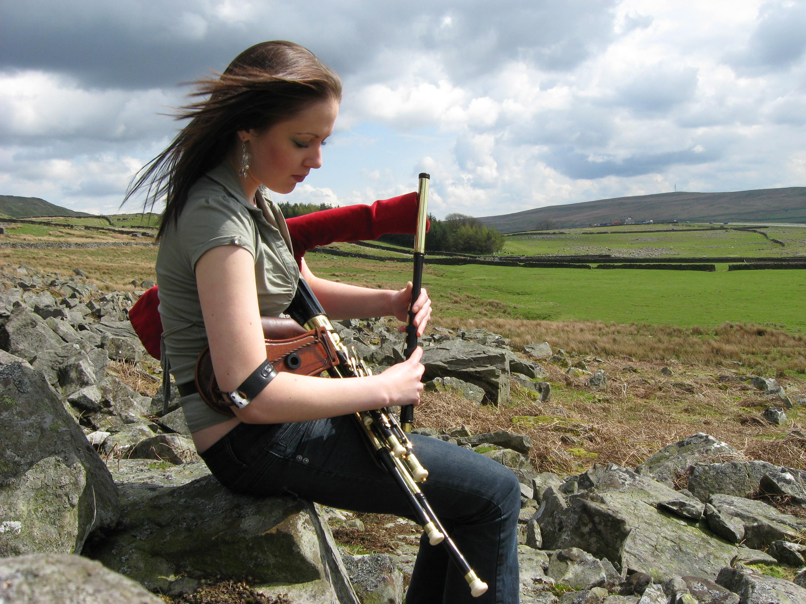

Uilleann Pipes
This is my second website
Everyone "knows" the Scottish Pipes
but the Uilleann Pipes are Irish
What sets it apart from Scottish Pipes is how they are played Irish Pipes are played sitting and without using your mouth, instead they are played using an air pump under their arm
Uilleann Pipes
This is one of my favorite Uilleann Pipers on youtube
